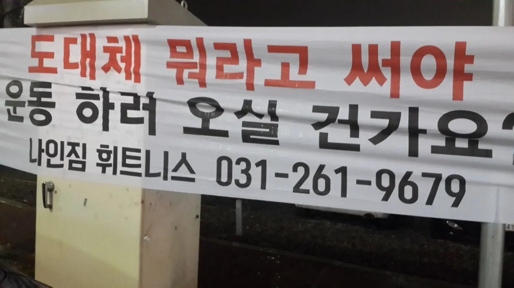

도대체 뭐라고 하면 한약 드실 건가요?
광명 일등한의원 곽승혁 원장
반갑습니다. 광명 일등한의원 곽승혁 원장입니다.
필진 공모전 5번째 아티클입니다. 지난 기간 보내주신 분에 넘치는 칭찬과 응원에 깊이 감사 드립니다.
원래는 충분히 생각하고 고민해 가면서 8월 말까지 감질나게 써 보려고 했는데 조만간 여름 휴가 일정도 있고, 하반기에는 개인적으로 해야 할 일들도 많을 것 같아서 속도를 내어 보려고 합니다. 아무쪼록 마지막까지 많은 관심과 성원 부탁 드립니다.
참고로 지난 연재물의 내용은 아래 링크를 통해 확인하실 수 있습니다.
초보 한의사 선생님들을 위한 진료실 팁
- 진찰법 - 어떻게 진찰하고 진단할까? https://medistream.co.kr/articles/139171
- 환자면담 - 내일도 오실거죠? 내가 더 잘할게요 https://medistream.co.kr/articles/139470
환자면담 번외 - 왜 환자에 집중해야 하는가? https://medistream.co.kr/articles/139943 - 직원관리 - 적과의 동침에서 전략적 동반자 관계로 feat. 직무교육 https://medistream.co.kr/articles/140227
- 한약처방 - 도대체 뭐라고 하면 한약 드실 건가요?
- 본인관리 - 슬기로운 한의사 생활 만들기
한의원의 고도화 단계
지난 글에서 동네 한의원의 고도화 전략에 대한 제 생각을 말씀 드렸는데요. 일반적으로 아래와 같은 단계를 통해 진행시킬 수 있을 것 같습니다.
- 충분한 환자 수 확보 - 건강보험 진료
- 일반 환자에서 나오는 비급여 - 약침, 한약
- 특화 클리닉 - 질환 특화
1단계인 환자 수 확보는 동네 한의원으로서 절대 포기할 수 없는 쌀과 같은 품목이고... 1단계 궤도에 진입해서 최소한의 생존 조건은 확보하셨다면 조금 더 높은 단계로 나아가야 합니다. 물론 1단계에서 이미 추나 등을 통해 객단가 높은 진료를 하고 계신다면 충분히 훌륭하십니다.
동네 한의원의 비급여 진료
다음 단계는 바로 비급여 인데요. 특화 진료과목이 없는 동네 한의원에서 일반 환자들을 대상으로 한 대표적인 비급여 항목은 보통 약침과 한약입니다. 대표원장은 짬바와 공부를 바탕으로 특화를 준비하면서 한의원의 장기 비전을 마련해야 하지만, 아직 임상 경험이 많지 않은 진료원장 입장에서는 특정 질환보다는 약침과 한약이라는 치료 수단에 집중하는 것이 순서에 맞을 것입니다.
약침은 원가 비율이 낮고(재료대) 가격 저항이 적어서 패키지 형태로 권하기 쉽습니다. 또한 주사에 익숙한 우리 나라 특유의 의료 문화상 환자 설득이 쉬운 장점이 있습니다.(본인 몸에, 특히 환부에 가시적이고 실질적인 뭔가가 들어간다는 데에 환자분들께서 훨씬 잘 수긍하시는 것 같습니다.) 그리고 패키지로 결제할 경우 재내원을 안정적으로 유도할 수 있습니다.
그런데 한약은 말입니다. 아시다시피 지난 수년 간 양방사탄들로부터 간독성, 신독성, 발암 촉진 등등등 무차별 공격을 당하는 바람에 이미지가 똥망인 상태입니다. 심지어 공짜로 주는 자보한약도 거부하는 환자들이 드물지 않다는 것은 진료실에서 이미 많이 경험해 보셨을 것입니다. 또한 물가 상승율을 감안하면 과거에 비해 한약 가격의 상대적 가치는 크게 낮아졌지만 실손을 등에 업고 있는 양방 치료와 대적하기에는 가격 경쟁력도 없습니다. 심지어 챙겨 먹기까지 불편합니다.
확실한 명분과 논리가 없으면 환자로서는 참 선택하기 어려운, 매력적이지 않은 치료 옵션이지요.
한약 먹으라고? 내가 먹는 것이 많아서...
그럼에도 불구하고... 한약
최근 한의원 진료 형태는 근골격계 질환에 대한 침치료, 추나치료 등으로만 축소, 왜곡되고 있습니다. 현실적인 어려움에도 불구하고 한의사는 한약을 처방할 때 가장 한의사 다울 수 있으며 우리 면허도 가치를 찾을 수 있다고 생각합니다.
저는 저에게 한약을 처방 받지 않은 환자는 제 환자가 아니라고 생각하는데요. 그렇다고 침치료 환자는 안보거나 한약 복용 안하면 진료 거부하는 것은 아니구요^^;; 그냥 큰 책임감이나 부담 없이 가볍게 대하고 진료하고 있습니다.
제 경험상 결국 저에게 오랫 동안 남아 있는 환자는 저에게 한약 드셨던 적이 있는 분이더라구요. 아마도 한약 처방을 하기 위해서는 의사가 환자 몸 전반에 대해 많이 알아야 하고, 더 많이 고민해야 하기 때문인 것 같습니다. 의사가 환자를 꼼꼼하게 진찰하고 진단한 뒤, 고민 끝에 처방을 내릴 때 한의대 교과서에서 언급한 것처럼 '전인적인' 의학이 될 수 있구요. 의사로서의 자존감도 높아지는 것을 느낍니다.
환자도 큰 돈을 지불하고 저에게 한약을 처방 받았을 때 저와 저희 한의원에 대한 소속감이 생기는 것 같습니다. 오랜만에 오신 환자분들께서 데스크에 접수하면서 "내가 여기서 한약도 지어 먹었어."라고 말씀하시는 것을 혹시 들어보신 적이 있으실 거에요. 그만큼 환자 입장에서도 침 맞으러 다닌 한의원과 한약 지어 먹은 한의원은 무게감이 다르다고 생각됩니다.
왜 한약이 안 나갈까?
한의원에서 한약이 잘 안나가는 이유에는 여러가지가 있겠지만...
우리가 해결 가능한 원인을 위주로 생각해 보면, '한약이 잘 안나가는 가장 큰 이유는 원장이 한약을 안 권하기 때문'인 것 같습니다. 길거리에서 지나가는 사람 붙잡고 뜬금 없이 한약을 권하는 것도 아니고, 그래도 한의원에 내원하신 분들은 한의학에 대해 일정 부분 신뢰나 호감을 가진(물론 침/부항/물리치료와 한약에 대한 호감도는 전혀 다를 수 있습니다만) 분들인데요. 그 분들을 대상으로 하는 마케팅은 사실 외부에서 불특정 다수를 대상으로 벌이는 어떠한 마케팅 보다도 구매 전환율이 월등히 높을 것입니다. 그럼에도 불구하고 저를 포함한 많은 원장님들께서 원내 환자를 처음부터 침 환자로만 규정하고 한약 처방을 해볼 생각도 안한다는 데에 한약이 안 나가는 가장 큰 원인이 있는 것 같습니다.
그럼 왜 한약을 안 권할까?
한의사가 환자에게 적극적으로 한약을 권하지 않는 데에도 수만가지 이유가 있겠습니다만, 임상 입문하신지 얼마 안된 초보 한의사 선생님들 입장에서 생각해 보면
- 환자가 너무 없어서 약 권할 사람이 없음
- 고가 비급여 진료 권했을 때 환자가 부담감 혹은 거부감 갖을까봐 지레 겁먹고 자기 검열
- 환자 봤을 때 무슨 처방을 써야 할지, 그 처방 쓰면 뭐가 어떻게 좋아질지 도저히 감이 안옴
정도인 것 같아요.
각각의 경우에 대한 솔루션을 생각해 보면...
- 환자가 너무 없어서 약 권할 사람이 없다면 당장의 생존을 걱정해야 하는 응급 상황입니다. 일반적인 동네한의원이라면 집에 쌀이 떨어진 상황이에요. 비급여가 문제가 아니라 환자와의 원활한 의사소통, 진료 시스템 및 한의원 내부 정비(시설, 직원 관리)를 통해서 우선 한의원을 정상 궤도로 올려 놓으시는 것이 급선무입니다.
- 환자가 경제적으로 부담을 느낄까봐 한약을 못 권하는 경우라면, 우선 생각을 조금 바꾸셔야 할 것 같아요. 환자는 한의사 선생님들께서 생각하는 것보다 훨씬 많은 돈을 자신의 건강을 위해서 쓰고 있습니다.(심지어 합리적이지 못한 항목에까지) 선생님께서 처방하시는 한약은 충분히 그 값어치 이상을 할 수 있으며 환자에게 궁극적으로 이익이 되는 옵션이에요. 환자의 어설픈 재무관리사가 되시기 보다는, 환자의 주치의로서 환자에게 가장 적절하고 합리적인 진료 옵션을 제안해 주세요.
- 환자에게 도대체 무슨 처방을 써야 할지, 이 처방 썼을 때 얼마만에 뭐가 어떻게 좋아질지 예후를 몰라서 자신있게 한약을 권하기 어려운 경우에요. 이 글을 읽으시는 분들께서 대부분 임상 경험이 짧은 초보 한의사 선생님들이라는 것을 전제로 할 때, 나보다 경험이 많은 대표원장, 선임 원장과 상의해서 처방하고, 서로 공유할 수 있는 표준 처방 위주로 처방해 보세요. 증례가 쌓이면서 내공도 쌓일 수 있어요. 표준 처방 위주로 각각의 처방에 대한 경험이 쌓여야 효과가 나면 나는대로, 효과가 안나면 안나는대로, 사이드가 나면 나는대로 남는 게 있어요. 그렇지 않으면 매 처방이 처음처럼이기 때문에 시간이 지나도 발전이 없어요.
이미 완성도 높은 처방들이 너무나 많아요. 10~20개 내외의 처방을 될수 있는대로 가감하지 말고 전체적인 용량만 조절해서 사용하도록 하고(사이드 나지 않도록), 혹시나 가감할 경우에는 2~3개 이내에서 약대를 고려하여 가감하여 처방해 보세요.
도대체 뭐라고 하면 한약 드실건가요?
한약 처방을 하기 위해서는 한약 자체(방제학)에 대한 공부도 중요하지만 도대체 뭐라고 말해야 환자가 한약을 선택할 지에 대한 고민도 병행해야 합니다. 사실 저는 개인적으로 후자가 훨씬 더 중요하다고 생각 하는데요. 후자가 안되면 아예 처방할 기회가 없기 때문이에요. 아산병원 병원장 하셨던 모 교수님께서도 '환자 적게 보는 명의는 없다.'고 말씀하셨다고 합니다.

심지어 헬스클럽조차도 어떻게 고객을 설득할 수 있을지 고민하는 시대에요
한약 처방의 기준이 있어야
제가 지난 번에 동네 한의원에서 평환수를 올리는 것은 비급여를 팔기 위한 트래픽을 만드는 것이라고 말씀 드렸는데요. 일반적인 동네 한의원에서 가장 많은 환자군이 근골격계 환자이므로 현재 내원하는 환자에게 어떻게 한약 처방을 할 수 있을지에 대해 생각해 보겠습니다. 어떤 사람에게 한약을 처방할 수 있고, 어떠한 의미가 있는지 의사도 머릿 속에 정리가 안되어 있는데 그 빈약한 논리로 환자를 설득하는 것은 불가능에 가까워요.
한약을 권하는 것이 여기 저기 침 놓아달라고 투정하는 환자들 입막음 용도가 되어서는 안됩니다. 한약은 확실히 환자에게 더 많은 비용 투자를 요하는 것이기 때문에 환자가 납득할 수 있는 논리가 있어야 합니다. 그렇기 위해서는 평소 한약 처방의 적응증을 머릿속에 담아두고 숙지하고 있다가 그런 환자가 보이면 과장되지 않고 담백하게 제시하시면 됩니다.
제가 근골격계 환자에게 한약을 권하는 기준은 대략 다음과 같습니다.
- 3부위 이상의 통증
- 3개월 이상의 통증
- 야간 통증
- 평소에 몸이 잘 붓는 타입
- 평소에 소화가 잘 안되는 타입
써 놓고 보니까 너무 많은데요. 그렇다고 해서 제가 약부의는 아니구요. 평소에는 침 놓느라 허덕이면서 생각도 못하고 있다가 문득 생각할 만한 여유가 생겼을 때(한가한 날ㅋ) 의식하고 실행하는 편이에요. 혹시 이 환자 한약을 처방할 만한 적응증에 해당되는가?
각각의 적응증에 대해 한의학적인, 현대의학적인 논리와 근거를 만들어 놓고 있다가 그 증상에 해당되는 환자가 있으면 친절하게 설명해 주시면 됩니다.
예를 들어 통증이 야간 통증 양상이라면 "야간에 발생하는 통증은 한의학적으로 어혈로 보는데, 말초 혈액 순환에 문제가 생긴 것이에요. 낮에는 활동하고 몸을 움직이니까 근육이 혈행을 보조해서 그나마 순환이 유지가 되는데 야간에는 가만히 누워 있으니까 혈액 순환 상태가 불량해져서 통증이 더 심해지는 것이죠. 염증이 있어서 움직일 때 아픈 것보다 더 만성화된 문제로 단순히 근육이완제, 진통소염제 먹어서 해결할 문제가 아니에요. 대사 자체를 개선해 줘야 해요." 라고 말씀드립니다.
그러면 환자분께서 "어떻게 치료해요?" 하고 되물어보실 것이고, 그러면 지그시 바라보면서 "한약으로요." 하시면 됩니다.
환자가 생각해도 이게 침 맞는다고 빨리 나을것 같지 않은 상황이라면 관심있게 듣고 선택하더라고요. 제 경험 상 환자분께서 "한약 값이 얼마인데요?" 라고 물어보시면 절반 이상은 한약 처방 받으시더군요. "오늘 처방해 주세요."하시는 분들도 꽤 있습니다. '아니 환자가 이렇게 쉽게 한약 복용을 결심한다고?' 하고 가끔 저 스스로 놀랄 때도 있어요.
또한 내 스스로 납득할 수 있는 확고한 기준이 있어야 설사 환자가 귓등으로 듣고 넘기거나, 거부하더라고 내 스스로의 참괴함이나 불편함 없이 당당할 수 있습니다. 나는 의사로서 환자에게 최선의 진료를 권했고, 환자가 거부한 것은 내가 아니라 나의 제안이니까요.

환자가 한약 제안에 관심을 보이시면 우리 원장님들 늘 하시듯이...
자연스럽게... 지그시 환자 눈을 바라보면서...(아이 컨택 중요)
"한약, 얼마나 드실거에요?" 하시면 됩니다.
아... 내가 박원장이 아니었구나...
철저한 세트 플레이 상황 만들기
한의원 진료원장들 한 명 한 명이 월드스타이고 뛰어난 개인기로 무장되어 있다면 그냥 마음 가는대로 몸 가는대로 플레이해도 최상의 경기를 할 수 있습니다.
마치
이제마 허준 투톱에
미드필더는 편작 화타 장중경 손사막
수비는 금원사대가 포백
골키퍼 이시진
감독 황제, 코치 기백
누구 하나만 공을 잡아도 다 제끼고 들어가서 골을 넣을 수 있는 팀이네요.
그런데 일반적인 동네한의원에서, 특히 임상에 나온지 얼마 되지 않은 초보 한의사 선생님들은 이런 식으로 플레이 하면 안됩니다. 곧바로 공 뺏기고 역습당해요. 마치 베트남이나 태국 대표팀이 철저하게 연습해서 약속된 팀 플레이로 게임에 임할 때, 화려하지는 않지만 골은 넣을 수 있고 경기에서 이길 수 있는 것과 같습니다.

사전에 충분히 연습했던 방식으로 세트 플레이를 진행해야 기회가 왔을 때 골을 넣을 수 있습니다
페르소나를 만들어 보자
페르소나는 원래 심리학 용어인데요. 마케팅에서는 어떤 제품 혹은 서비스를 사용할 만한 목표 인구 집단 안에 있는 다양한 사용자 유형들을 대표하는 "가상의 인물"을 뜻합니다. 지금 내 한의원에 다니는 환자 중 많은 유형의 환자를 기준으로 구체적인 페르소나를 만들어서 그 사람에게 어떻게 상담하고 어떤 처방을 쓰면 좋을지 먼저 고민해 보아야 설득의 방법이 훨씬 구체적이고 정밀해집니다.
예를 들어... 50대 직장인 여성 홍길순 씨는 평소 어깨 결림, 손가락 통증이 있고, 쉽게 피로하고, 스트레스도 많이 받고 있습니다. 많이 살찌지는 않았고 근육에 탄력이 있는 체형이지요. 근육의 긴장을 풀어주고, 스트레스를 완화하며, 말초 순환을 개선하는 처방이 필요합니다.
이 때 제가 많이 쓰는 처방이
초간단 처방집의 멀티플 통증방인데요..
백작약 10 향부자 건지황 진피 6 당귀 천궁 시호 계지 곽향 감초 4 (단위 첩당 g)
매우 매우 매우 좋은 처방입니다. 초간단 처방집 중 가장 활용도 높은 처방이라고 생각합니다. 굳이 가감 많이 안하셔도 되는데 가감 하실거면 약대를 감안하여 2~3개 정도 넣고 빼면 됩니다.
이런 식으로 어떤 연령대의 어떤 체질의 사람, 무슨 일 하는 사람 등등 구체적인 페르소나와 그에 대한 솔루션을 미리 만들어 놓은 후 기회가 되면 과감하게 도전해 보세요. 의외로 성공율이 매우 높습니다.
현재 진료하는 환자군에 대한 세밀한 관찰과 추론을 통해서 여러 개의 페르소나를 만들어 두신다면 당연히 비급여를 창출할 수 있는 루트도 훨씬 더 늘어날 것입니다.
기회를 잡기 위한 준비
평소에 준비가 되어 있을 때 기회도 잡을 수 있습니다. 준비가 되어 있지 않은 사람은 기회가 오더라도 그게 기회인지도 모르고 넘어가는 경우가 많지요. 저도 물론 그랬습니다^^ 돌이켜 생각해 보면 정말 많은 기회들이 있었는데 무기력하게 흘려 보낸 것 같아요. 하지만 각성하고 준비한다면 죽기 직전까지 기회는 계속 찾아올 것이라고 생각합니다.
환자에게 한약을 포함한 여러가지 다양한 치료 옵션을 투여하기 위해서도 준비가 필요합니다. 대략적으로 2가지 정도 말씀 드리면...
- 평소 환자볼 때 환자가 물어보는 증상에 대해 해석할 줄 알아야 합니다. 근골격계 환자라 하더라도 종종 '원장님, 이건 왜 그런 거에요? 이건 뭐에요?'하고 본인의 c/c 외에 다른 증상에 대해 질문할 때가 있는데요. 이때 제대로, 체계적으로 대답하면 진료 영역이 확대되거나, 비급여 진료의 실마리를 잡게 됩니다. 그렇지 못하고 어버버버 해버리면 다시는 안 물어 보구요. 그나마 다행인 것은 chat GPT로 인해 예전에 비해서 그 준비가 훨씬 수월해졌다는 것입니다. 환자가 물어보는 증상이나 질병에 대해서는 모르겠다고 대충 넘어가지 마시고 기회라고 생각하고 성의 있게 대답해 주세요.
- 환자가 자신의 가족의 증상을 물어보는 것 역시 절반 이상 비급여로 연결될 가능성이 있습니다. 특히 손주들 봐주시는 할머니 환자가 물어보는 것에 잘 귀 기울여 주시고 친절하게 응대해 주세요. 감기가 잦은 아이, 밥을 잘 안 먹는 아이 등등 모두 한약 환자입니다.(선생님한테 한약 안 드시면 다른 한의원 가서 드시는 거에요.)
그런 환자가 안 오는 것이 아니라 나에게 안 물어보는 것일 뿐
한의원에서 진료하다 보면 한의원에는 죄다 허리 아프고, 어깨 아프고, 발목 삔 환자만 오는 것 같은데요. 사실 자세히 살펴보면 각자 굉장히 복잡한 사연과 증상들을 가지고 있습니다. 그런데 그 분들이 여기서 그런 얘기를 안하시는 것은 여기가 그런 얘기를 하고 그런 치료를 할 공간이 아니라고 생각하기 때문입니다.
평소 다빈도 증상, 질환들 위주로 충분히 공부해 놓으시고, 원내 홍보물도 잘 만들어 놓으시고, 환자 문의가 들어왔을 때 적극적으로 응해 주시면 충분히 기회가 생길 것입니다.
이번 글까지 환자와 직원을 어떻게 대하고, 어떻게 처방할지에 대한 대략적인 개념을 설명해 드렸습니다. 지난 시간 긴 글 읽어 주시느라 정말 수고 많으셨고 감사합니다. 일천한 내용이나마 부디 도움이 되셨으면 좋겠고, 부족하고 편벽한 부분은 부디 너그럽게 이해해 주시리라 믿습니다.
사실 지금까지 말씀 드렸던 내용은 저희 한의원 진료원장 교육 프로그램을 기반으로 한 것인데요. 글로써 제 생각을 정리하고 체계화하면서 가장 이익을 보는 것은 바로 저 자신인 것 같습니다. 돌아오는 월요일 아침에 저희 진료원장님과 함께 하는 공부시간에 파킨슨 파트를 끝으로 신경학을 마무리 할 예정인데요. 오늘 비급여 및 한약에 대한 생각들을 정리하면서 느낀 바가 있어서 다음주부터는 한약과 처방에 대해서 같이 민주적이고 자율적으로 논의해 볼까 합니다. 예전에 처방 교육 하긴 했었는데 이번 기회를 통해서 훨씬 구체적으로 할 수 있을 것 같습니다. 하반기 목표도 그 쪽으로 좀 더 무게 중심을 두게 될 것 같구요.
내 손과 입으로 해 보아야 그 때부터 학을 벗어나 습의 단계로 들어가는 것이라고 생각합니다. 이 아티클 연재의 주된 독자이신 초보 한의사 선생님들께서도 글만 읽고 끝내지 마시고, 자신의 언어와 방식으로 한 번 정리해 보시기를 감히 권합니다.
요즈음 들어 게시판 눈팅하다 보면 우리 업황에 대한 자조, 비관, 타 직군과의 비교를 통한 우울감 등 안타까운 글들이 많이 보이는데요. 그래도 아직까지는 우리 면허가 충분히 가치있고 먹고 사는 데에도 큰 문제 없을 만큼의 밥벌이는 한다는 생각이 듭니다.
무더운 여름에 건강 주의하시고 힘 내세요^^ 머지 않은 기회에 마지막 연재를 통해 인사 드리겠습니다.
감사합니다.